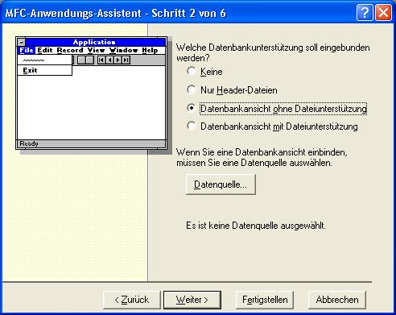
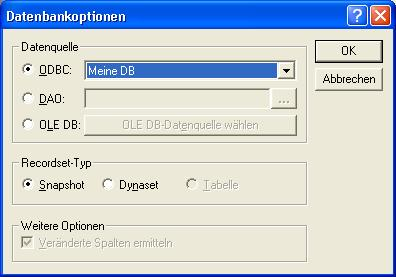
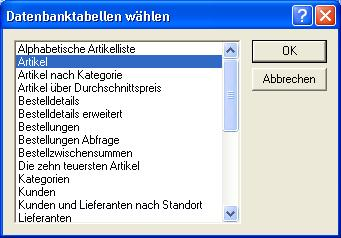
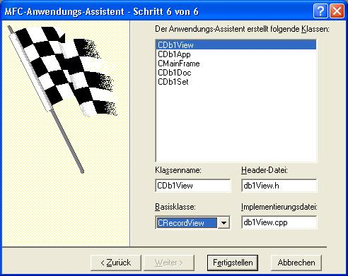
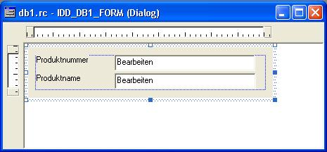
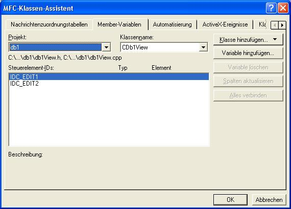
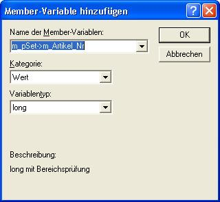
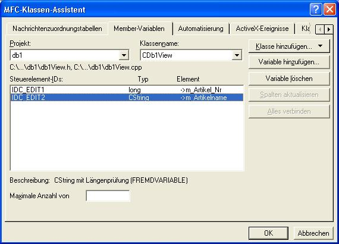

Datenbankbeispiel 1
Einleitung
Um diese Anleitung nicht zu lang werden zu lassen, schreibe ich immer nur die Dinge auf, die verändert werden müssen. Bei Codeabschnitten werden die Teile, die von mir verändert wurden fett geschrieben.
Beispiel
Aufgabe
Suchen Sie mit dem Explorer die MS-Beispieldatenbank "Nordwind". Es kann sein, dass diese nicht installiert ist.
Erstellen Sie ein Programm, welches die Tabelle "Artikel" dieser Datenbank durchblättert und jeweils die Felder "Artikelnummer" und "Artikelname" dieser Tabelle in einem Dialogfenster anzeigt. (Hinweis: CRecordView)
Lösung in Prosa
- Zuerst einmal ein neues Projekt anlegen:
- Schritt 1 : SDI - Anwendung
- Schritt 2 : Datenbankansicht ohne Dateiunterstützung

Auf "Datenquelle" drücken.


- Schritt 6 : CRecordView

- Zeichnen des Dialogs:

- Nun müssen nur noch die Eingabefelder mit den Feldern in der Datenbank verbunden werden.
Dazu muss der Klassenassistent geöffnet werden.

- Bei Name der Membervariable ist nur ein Wert aus der vorgegebenen Liste auszuwählen.

- Nun siehts so aus:

- Fertig